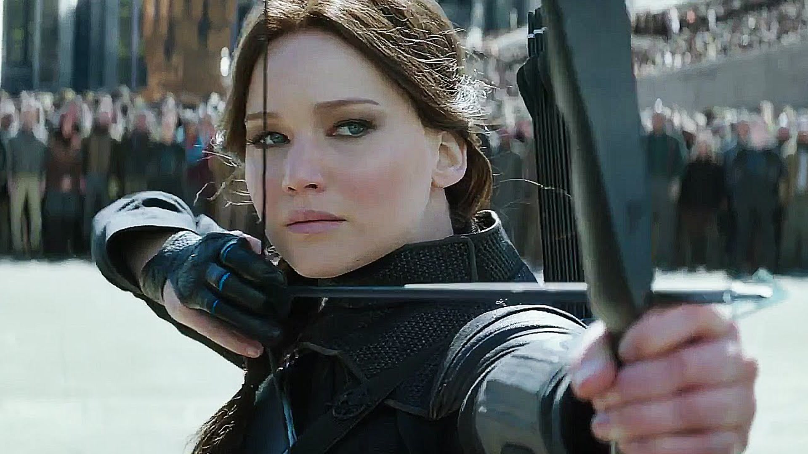
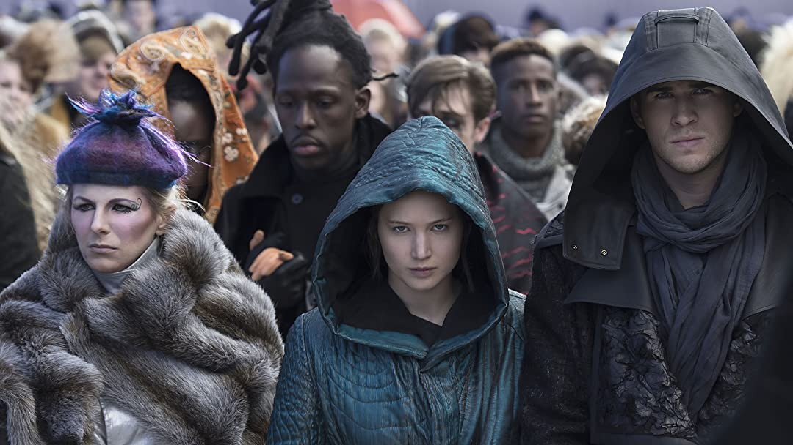
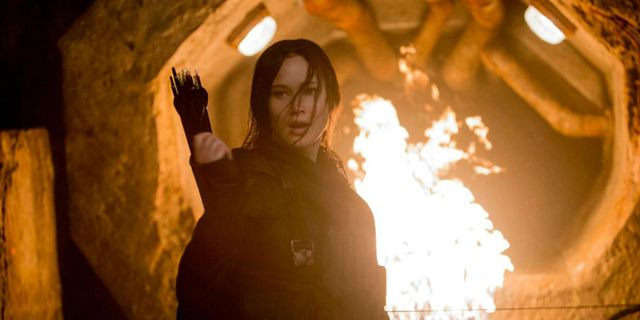

The Hunger Games: Mockingjay Part 2
The Hunger Games: Mockingjay — Part 2 is the film adaptation of the second half of Mockingjay by Suzanne Collins and the fourth and final film in The Hunger Games film series. It's the sequel to The Hunger Games: Mockingjay - Part 1, the film adaptation of the first half of the book. It was theatrically released on November 19, 2015, in the United Kingdom, and on the following day in the United States.
With the nation of Panem in a full-scale war, Katniss confronts President Snow in the final showdown. Teamed with a group of her closest friends – including Gale, Finnick, and Peeta – Katniss goes off on a mission with the unit from District 13 as they risk their lives to liberate the citizens of Panem, and stage an assassination attempt on President Snow who has become increasingly obsessed with destroying her. The mortal traps, enemies, and moral choices that await Katniss will challenge her more than any arena she faced in the Hunger Games.
The film gained mainly positive reviews from critics during their critic screenings, and currently holds an 70% approval rating on the review aggregator Rotten Tomatoes, making it the second lowest in the film series. Similarly, the film currently holds a score of 6.6 out of 10 on IMDb.
Cast

Jennifer Lawrence as Katniss Everdeen

Josh Hutcherson as Peeta Mellark

Liam Hemsworth as Gale Hawthorne

Woody Harrelson as Haymitch Abernathy
Elizabeth Banks as Effie Trinket
Julianne Moore as President Alma Coin
Plot
Katniss Everdeen (Jennifer Lawrence) recovers after nearly being murdered by Peeta Mellark (Josh Hutcherson), who had been "hijacked" by the Capitol. She asks President Alma Coin (Julianne Moore) to send her to District Two, the last district outside rebel control. During her recovery, Katniss visits Peeta; he is recovering some of his memories but remains unstable and resentful towards Katniss, which causes her to become depressed. She approaches Coin and demands to kill Snow as her "final mission", but Coin declines in favor of preserving Katniss as the symbol of their revolution. Katniss and her camera crew, along with Finnick and Gale, are assigned to Squad 451, the "Star Squad", led by Boggs (Mahershala Ali). However, they discover that their mission is to trail behind the invasion and be the onscreen face of the rebellion. They use a holographic map called a Holo to evade "pods" (booby traps) created by Gamemakers which line the streets of the Capitol; Finnick cynically compares the pods to an arena by remarking "Ladies and Gentlemen, welcome to the 76th Hunger Games.". Peeta is unexpectedly assigned to the team by Coin despite still being vulnerable to the Capitol's conditioning. Boggs warns Katniss to be careful around him, because Coin sees Katniss as a potential threat to her authority, and may have placed Peeta on the team to indirectly eliminate her. Katniss initially acts hostile towards Peeta, but eventually they begin to open up to one another, as she realizes he has trouble telling real memories from hijacked ones.
As they are still far from Snow's mansion, the team decides to venture into the Capitol's sewers in order to avoid the pods, using Pollux (Elden Henson) as a guide, since he used to work in the underground. Peeta, remorseful over Mitchell's death, believes he should die rather than endanger the rest of the squad again, but admits to Katniss that his memories are becoming clearer. Snow, discovering Katniss is still alive, unleashes a pack of monstrous reptilian muttations to hunt her down. They are attacked by Peacekeepers after reaching the underground railways, during which another pod kills Messalla (Evan Ross). The few survivors eventually reach the surface and Cressida (Natalie Dormer) leads them to a safehouse, where a former Hunger Games stylist, Tigris (Eugenie Bondurant), hides them in her basement. Snow announces that the rebels have penetrated deep into the Capitol and asks refugees to come to his mansion, offering them with food and shelter. With the pods deactivated to allow passage, Katniss and Gale disguise themselves and mingle with the refugees to gain access to Snow. Upon the explosion, a team of rebel medics attempt to help the injured, among whom is Katniss' sister, Prim (Willow Shields). Shocked to see her sister on the battlefield, Katniss heads towards her, but just as Prim sees her a second round of bombs go off, killing Prim and badly injuring Katniss.
Upon recovering, Katniss learns from Haymitch that the Capitol has been conquered by the rebels, and that Snow has been captured. Katniss confronts the imprisoned Snow, who claims that Coin masterminded the child-bombings in order to turn his remaining supporters against him; Coin has thus played both Snow and Katniss "for fools" because they were both too focused on destroying each other to see her endgame. When Katniss accuses him of lying, he calmly reminds her of their promise to always be truthful to each other. Coin proposes having one final edition of the Hunger Games with the children of the Capitol as retribution for the previous games, as an alternative to exterminating most of the Capitol's population as war criminals. Beetee, Annie and Peeta vote no, while Johanna and Enobaria vote yes. Realizing that Snow was right about Coin's ambitions and ruthlessness, Katniss votes in favor of the motion "for Prim," which gains Coin's trust; Haymitch follows her lead.
At the execution, which is being held before the whole of Panem, Katniss faces Snow once again. As she readies her bow, the two make eye contact, and Snow gives her one last smile. Katniss silently agrees, and instead shoots the arrow into Coin's heart, killing her. After an initial period of depression, Katniss is eventually able to release her grief over Prim's death. Commander Paylor is elected the new President of Panem, and Katniss, Peeta, and Haymitch bond over their shared trauma. Years later, Katniss and Peeta are shown to have two children. As Katniss' infant child wakes up from a nightmare she reminisces about her own recurring nightmares she still suffers from and explains she plays "a game" where she lists all the good things she has seen someone do. She notes that while the game has grown tedious over the years, "there are much worse games to play", as she smiles into the camera before the screen cuts to black.